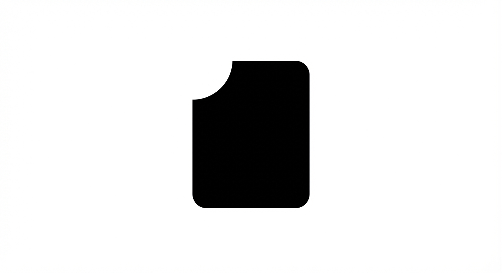
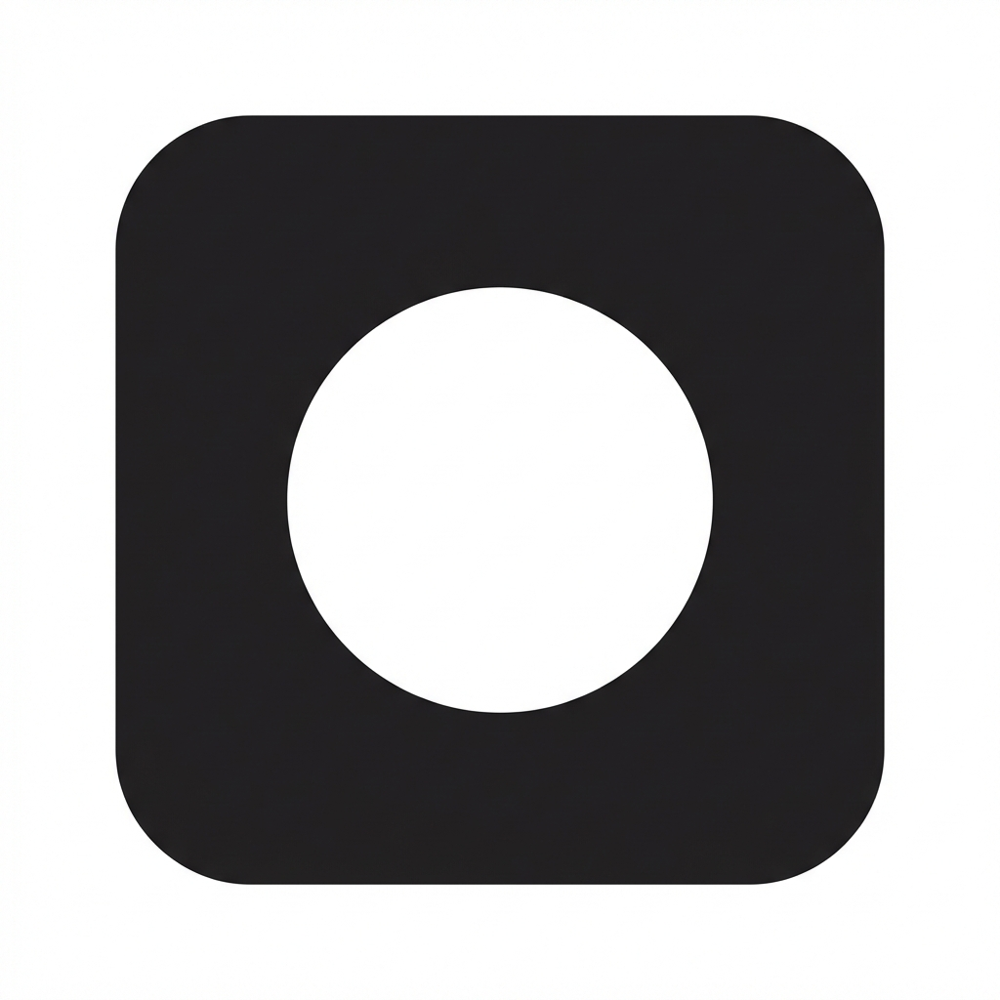
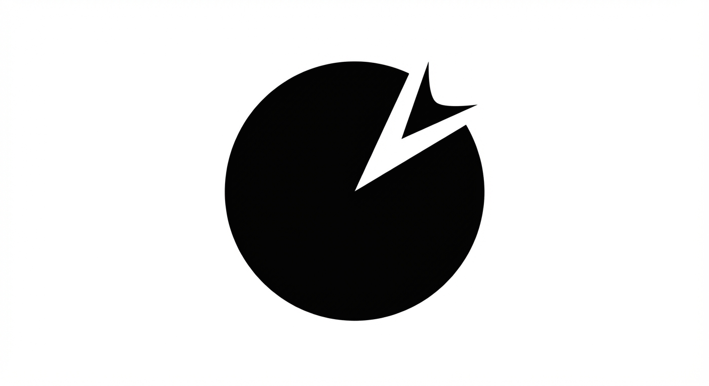
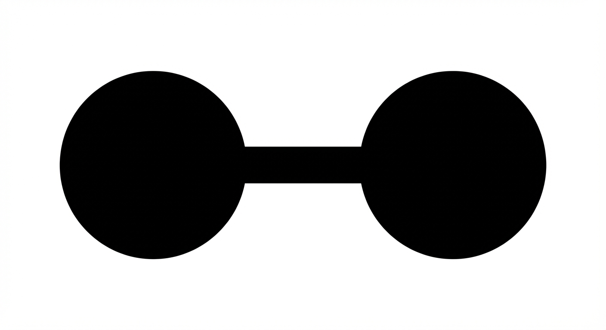

Single symbol + single structural move. Monochrome-first.
01_offset_ring_cut
Design an app icon symbol as one thick ring with a single offset cut. No extra elements. The cut placement must make it ownable and instantly recognizable.
02_monolith_bite
Design one bold rounded monolith shape with one clean geometric bite removed from the edge. Keep silhouette extremely simple and memorable.
03_square_aperture
Design a rounded square symbol with one centered circular aperture removed. No secondary details. Prioritize home-screen legibility.
04_disc_notch
Design one solid disc with one sharp directional notch removed from the perimeter. The notch should suggest guidance without looking like a generic arrow.
05_twin_nodes_bridge
Design exactly two circular nodes connected by one thick bridge bar. Keep spacing strict and geometry bold. One symbol only, no decoration.
06_gate_core
Design a minimal gate form: two vertical pillars and one top bar with one centered internal opening. Make the silhouette clean, thick, and iconic.